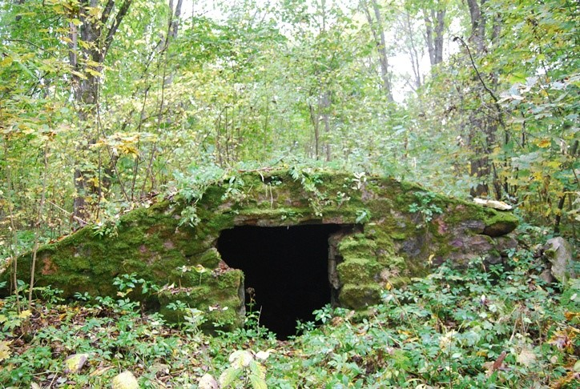
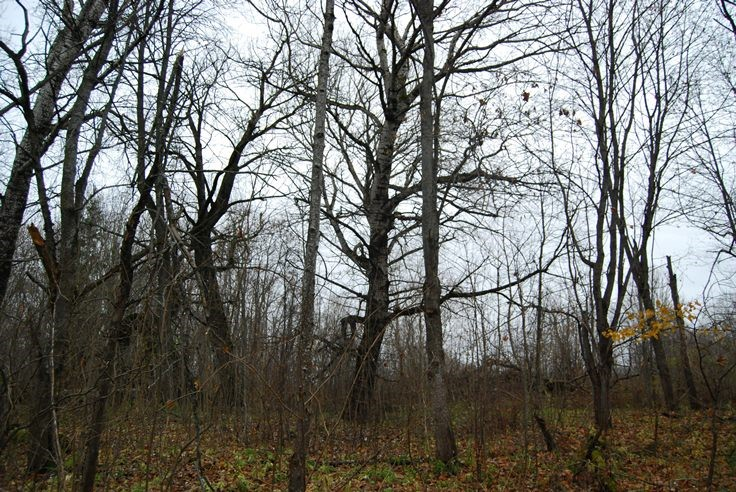
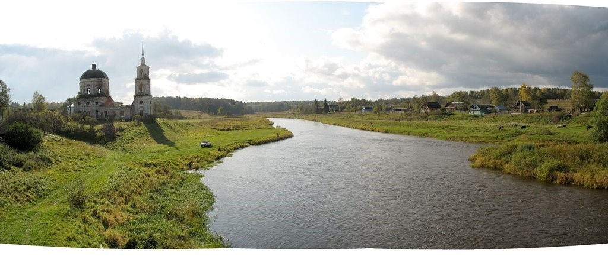
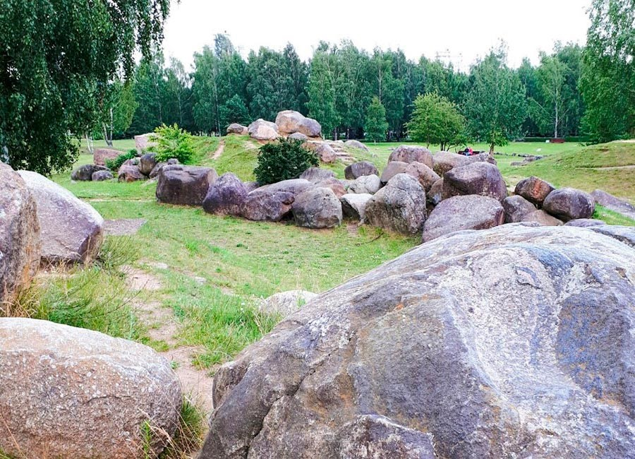
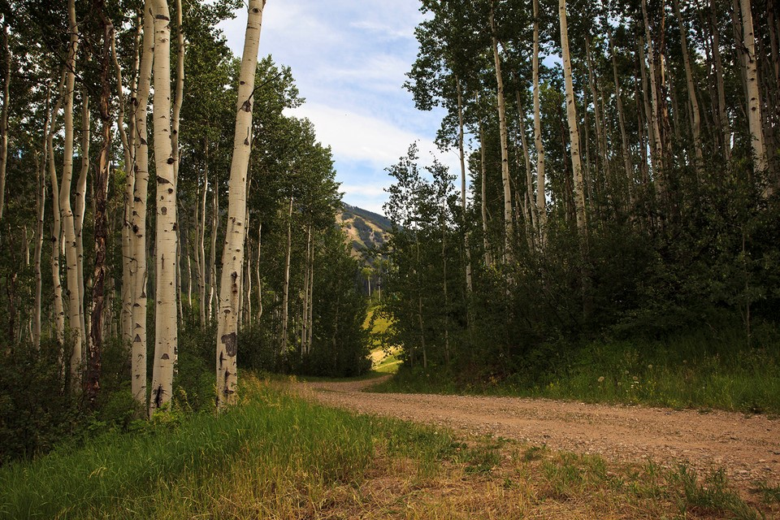
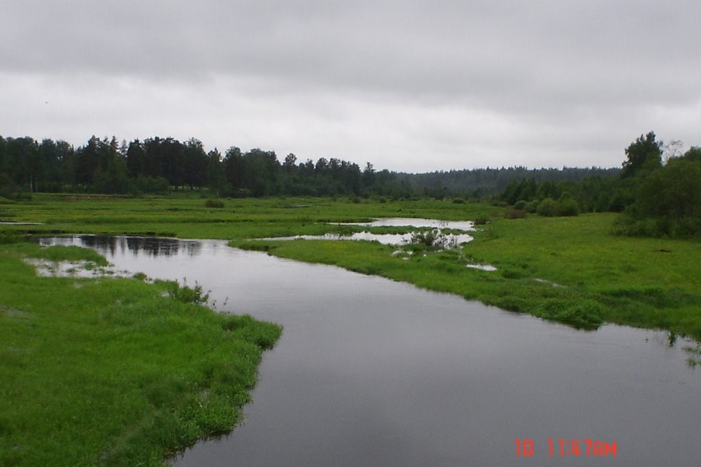

Спирово
Природа
1.Парк Дубровка
Крупнейший в Спировском районе усадебный комплекс и одна из самых значительных усадеб Тверской губернии. Расположена усадьба в юго-западной части села, на ровной площадке, на вершине пологого склона, занимает сравнительно небольшую территорию, на которой находятся в настоящее время главный дом, церковь и парк с прудами и валунным погребом. Парк в имении Дубровка был создан в середине XIX века и представляет собой парк с регулярной планировкой, в создании которого использовались естественный ландшафт и особенности расположения усадебных строений. Все эти постройки сооружены в 1 четверти XIX века, хотя парк, вероятно, имеет отдельные более старые деревья. Возле церкви расположено символическое (восстановленное с использованием старых памятников) фамильное захоронение владельцев и строителей усадьбы - Никанора Михайловича Свечина, его брата Ивана Михайловича и супруги последнего Марии Андреевны (в девичестве Загряжской). Эти красивейшие места в XIX - нач. XX в. называли новоторжской Швейцарией. Дом окружен сильно заглохшим и заброшенным парком. Из построек сохранился валунный погреб:

А также уцелели сильно обмелевшие пруды
Остатки липовой аллеи, современной дому:
Дуб (он считается чуть ли не трехсотлетним). Две лиственницы у южного фасада главного дома - остаток парадного двора:

И умирающие от старости серебристые тополя и акации:
2.Зеленая зона Бабье

3.Валуны Мошковские

4.Роща березовая Выдропужская

5.Болото по реке Тихвинка
